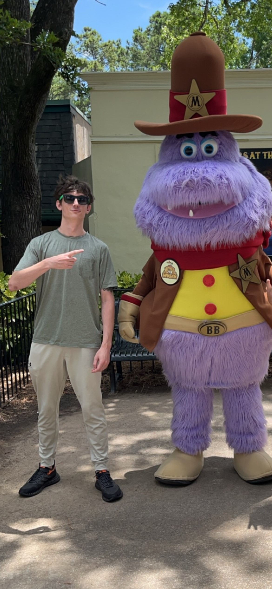

Jared Strickland is a seasoned IT professional with over a decade of hands-on experience in the technology sector. He holds an Associate’s Degree in Computer Networking and is currently furthering his education in Cybersecurity & Video Game Design at Middle Georgia State University. His technical expertise is backed by a suite of certifications, including Certified Ethical Hacker (CEH) Master, CompTIA A+, and Server+, which underscore his commitment to mastering the intricacies of IT security and infrastructure. Jared’s journey in IT began with a solid foundation in networking, and over the years, he has cultivated a robust skill set that spans multiple facets of information technology. His passion for cybersecurity drives him to stay at the forefront of the field, constantly learning and adapting to the latest challenges and developments. As Jared continues to hone his skills, he envisions a future where he can merge his deep knowledge of cybersecurity and coding to contribute to the video game development industry. His long-term aspirations are as ambitious as they are inspiring—whether it’s aiming for the stars as an astronaut or protecting digital frontiers in the gaming world, Jared’s drive and dedication to his craft are evident in every endeavor he undertakes.